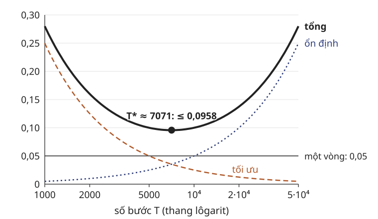

Tính ổn định của SGD và tổng quát hóa trong học sâu
Bài 08
Với hàm lỗi lồi, trơn, có gradient bị chặn và độ dài bước không vượt hai lần nghịch đảo hằng số trơn, hai lần chạy hạ gradient ngẫu nhiên trên hai mẫu lân cận tách nhau chậm, nên khoảng cách tổng quát hóa kì vọng không vượt một hằng số nhân tổng các độ dài bước chia cho cỡ mẫu.
Lý thuyết học thống kê · Năm học 2026–2027, học kỳ 1
Khoa Công nghệ thông tin, Trường Đại học Công nghệ, ĐHQGHN
Tiên quyết và quy ước
Nhắc lại: mẫu lân cận (neighboring samples) $s^{(i)}$: $z_i$ của $s$ thay bằng $z'$; $\xi$ là nguồn ngẫu nhiên riêng của $A$.
(T1): $Z_1,\ldots,Z_m$ độc lập cùng phân bố $D$; (T2): $\ell\ge0$, $\ell(w,\cdot)$ đo được, $L_D(w_1)<\infty$ ($w_1$ khởi tạo).
$A$ ổn định đều (uniform stability): với mọi $s,i,z'$, mọi quan sát kiểm tra (test observation) $z$, hai kì vọng hữu hạn và
Định lý 06.10: (T1), (T2), $\xi$ độc lập với $S$, ổn định đều, khả tích: $\lvert\mathbb E_{S,\xi}[L_D(A(S;\xi))-L_S(A(S;\xi))]\rvert\le\epsilon_{\mathrm{stab}}(m)$.
Mục tiêu
Mô tả hai lần chạy ghép cặp, tính khoảng cách giữa chúng.
Chứng minh bước gradient không giãn khi hàm lồi, trơn và độ dài bước không vượt hai lần nghịch đảo hằng số trơn.
Chứng minh bất đẳng thức truy hồi; suy ra cận ổn định, cận khoảng cách tổng quát hóa.
Ghép cận ổn định với cận tối ưu để chọn số bước, độ dài bước.
Kiểm giả thiết; tách kết quả chứng minh được khỏi phỏng đoán.
Hạ gradient ngẫu nhiên (stochastic gradient descent, SGD) từ $0$, rút đều có hoàn lại;
độ dài bước (step size) $0{,}5$; trung bình $20$ lần chạy (hạt giống ngẫu nhiên, random seed);
kiểm tra: $5000$ quan sát độc lập.
Vòng (epoch)
Huấn luyện
Kiểm tra
Khoảng cách
$0{,}5$
$0{,}618$
$0{,}662$
$0{,}045$
$1$
$0{,}561$
$0{,}640$
$0{,}079$
$5$
$0{,}376$
$0{,}589$
$0{,}213$
$20$
$0{,}243$
$0{,}662$
$0{,}419$
$100$
$0{,}134$
$1{,}053$
$0{,}919$
Câu hỏi: đại lượng nào quyết định khoảng cách?
2.Hai lần chạy ghép cặp và bước gradient không giãn
Hai lần chạy dùng chung các lần rút; với hàm lỗi lồi, trơn, bước ngắn trên cùng quan sát không đẩy chúng ra xa.
hai lần chạy ghép cặp · bước chung · bước khác biệt · không giãn · tính đồng bức
Thiết lập bài toán
Quan sát $z\sim D$ chưa biết; tập huấn luyện $S\sim D^m$ theo (T1); $W\subset\mathbb R^p$ đóng, lồi, khác rỗng; hàm lỗi $\ell(w,z)\ge0$ khả vi theo $w$.
Thuật toán 08.1. $w_1\in W$; $T$, $\eta_t>0$ tất định, chọn trước; rút $i_t$ đều trên $\{1,\ldots,m\}$, có hoàn lại:
Đầu ra $A(S;\xi)$: $w_{T+1}$ (điểm lặp cuối, last iterate) hoặc $\bar w_T$ (điểm lặp trung bình, averaged iterate); $\xi=(i_1,\ldots,i_T)$ độc lập với $S$.
Cần chặn khoảng cách tổng quát hóa kì vọng (expected generalization gap) $\mathbb E_{S,\xi}[L_D(A(S;\xi))-L_S(A(S;\xi))]$.
Giả thiết
Với mọi $z\in\mathcal Z$: (S) $\ell(\cdot,z)$ lồi và $\beta$-trơn, $\lVert\nabla\ell(u,z)-\nabla\ell(v,z)\rVert\le\beta\lVert u-v\rVert$ (Định nghĩa 05.6), trên toàn $\mathbb R^p$; (S′) chỉ $\beta$-trơn.
(G) $\lVert\nabla\ell(w,z)\rVert\le G$ với mọi $w\in W$; $W$ lồi nên (L): $\lvert\ell(u,z)-\ell(v,z)\rvert\le G\lVert u-v\rVert$.
Độ dài bước $0<\eta_t\le2/\beta$ tất định; (I) $\Pr(i_t=i)=1/m$ với mọi $t$, $i$.
Dưới (X), hàm lỗi logistic (logistic loss) $\ln\big(1+e^{-\tilde y\langle w,x\rangle}\big)$, $\tilde y=2y-1$, thỏa (S) với $\beta=C_x^2/4$, (G) với $G=C_x$ trên $\mathbb R^p\!.$
Ví dụ: hàm lỗi Huber và hồi quy logistic nhiều vòng
Trực quan. Mỗi lần chạy giữ phân bố của Thuật toán 08.1: hai kì vọng của Định nghĩa 06.9 không đổi.
Kỹ thuật. Ghép cặp: với $a$, $b$ trên cùng không gian của $\xi$, $\lvert\mathbb E_\xi a-\mathbb E_\xi b\rvert\le\mathbb E_\xi\lvert a-b\rvert$ (Jensen).
Dùng khi so hai kì vọng của một thuật toán trên hai đầu vào.
Ví dụ. Một bước, $s=(0,1,2,3)$, $s^{(4)}=(0,1,2,-3)$, $w_1=0$, $\eta=\tfrac12$.
Bước chung áp dụng cùng ánh xạ $w\mapsto\operatorname{proj}_W\big(\Gamma_{\eta_t,z_{i_t}}(w)\big)$ cho $w_t$, $w'_t$.
Định nghĩa 08.3. $\Gamma$ có hệ số giãn (expansion factor) $\kappa$ nếu $\lVert\Gamma(u)-\Gamma(v)\rVert\le\kappa\lVert u-v\rVert$ với mọi $u,v$; không giãn (nonexpansive) khi $\kappa=1$.
$\nabla f$ là $\tfrac1\beta$-đồng bức (co-coercive) nếu với mọi $u,v$:
$f=\tfrac\beta2\lVert w\rVert^2$: dấu bằng; $f=-\tfrac12w^2$, $1$-trơn: vế trái $-(u-v)^2<0$ khi $u\ne v$, không đồng bức.
Bước gradient không giãn
Trực quan. Một chiều, $f$ khả vi hai lần, $f''\in[0,\beta]$: hệ số góc của $\Gamma$ là $1-\eta f''\in[1-\eta\beta,1]\subset[-1,1]$ khi $\eta\le2/\beta$.
Bổ đề 08.4.Giả thiết: $f$ lồi, $\beta$-trơn trên toàn $\mathbb R^p$; $0\le\eta\le2/\beta$; $W$ khác rỗng, đóng, lồi.
Bảo đảm: tất định; với $\Gamma(w)=w-\eta\nabla f(w)$, $g_{uv}=\nabla f(u)-\nabla f(v)$: (a) $\nabla f$ là $\tfrac1\beta$-đồng bức;
Ví dụ 08.3. $p=1$, $W=\mathbb R$, $\beta=1$; hệ số giãn nhỏ nhất: $\max\lvert\Gamma'\rvert$.
Bậc hai $\tfrac12w^2$: $\lvert1-\eta\rvert$; Huber: $\max\{\lvert1-\eta\rvert,1\}$; lõm $-\tfrac12w^2$: $1+\eta$.
$\eta$
Bậc hai
Huber
Lõm
$\tfrac12$
$\tfrac12$
$1$
$\tfrac32$
$2$
$1$
$1$
$3$
$3$
$2$
$2$
$4$
Diễn giải: ngưỡng $2/\beta$ chặt (bậc hai: $1$ khi $\eta=2$, $2$ khi $\eta=3$); hàm lõm giãn với mọi $\eta>0$.
Bước khác biệt dùng hai ánh xạ $\Gamma_{\eta_t,z_i}\ne\Gamma_{\eta_t,z'}$: Bổ đề 08.4 không chặn $\Delta_{t+1}$.
Bài tập: bước gradient của hàm lỗi Huber
Bài tập 08.3(a). $\ell_{\mathrm H}$ ($\beta=1$), $z$ cố định, $d(w)=\partial_w\ell_{\mathrm H}(w,z)$. Không dùng Bổ đề 08.4, chứng minh trực tiếp
với $0\le\eta\le2$, mọi $u,v$: $\lvert\Gamma_{\eta,z}(u)-\Gamma_{\eta,z}(v)\rvert\le\lvert u-v\rvert$, chỉ dùng hai tính chất của $d$: không giảm và $1$-Lipschitz.
Tính chất nào đến từ tính lồi? Nêu một cặp $u,v$ cho thấy kết luận sai khi $\eta=3$.
Diễn giải: bước chung kéo hai lần chạy lại gần ($i_1=4$, $i_2=1$: $\Delta$ từ $1$ xuống $\tfrac12$), nên kì vọng tăng chậm hơn cận.
Bài tập: ví dụ Huber với độ dài bước 1
Bài tập 08.1(c). Ví dụ 08.2 ($s=(0,1,2,3)$, $s^{(4)}=(0,1,2,-3)$, $w_1=w'_1=0$), rút đều có hoàn lại, $\eta=1$.
Tính $\mathbb E\Delta_2$, $\mathbb E\Delta_3$ bằng liệt kê, so với cận của Mệnh đề 08.5(b);
chỉ ra các dãy $(i_1,i_2)$ có $\Delta_3$ nhỏ hơn ngặt cận của Mệnh đề 08.5(a) trên dãy đó.
Lời giải: $\eta=1\le2/\beta$, cận (b) là $T/2$; $\mathbb E\Delta_2=\tfrac24=\tfrac12$, bằng cận.
$T=2$: tổng $\Delta_3$ trên nhóm $i_1\ne4$ là $6$, trên nhóm $i_1=4$ là $0+1+2+4=7$; $\mathbb E\Delta_3=\tfrac{13}{16}<1$.
Hụt so với cận (a): $(4,1)$ hụt $2$, $(4,2)$ hụt $1$; tổng $\tfrac3{16}=1-\tfrac{13}{16}$.
4.Tính ổn định đều của hạ gradient ngẫu nhiên
Với (T1), (T2), (S), (G), $\eta_t\le2/\beta$, khoảng cách tổng quát hóa kì vọng không vượt $2G^2/m$ nhân ngân sách độ dài bước.
ổn định đều · điểm lặp cuối · điểm lặp trung bình · ghép cặp trong thí nghiệm mở đầu
Tính ổn định đều của SGD
Mệnh đề 08.5 chặn $\mathbb E\Delta_{T+1}$; theo (L), hiệu hàm lỗi tại mọi $z$ không quá $G\Delta_{T+1}$.
Trực quan. $\eta_t\to0$: đầu ra dừng ở $w_1$, cận về $0$; mỗi bước khác biệt thêm không quá $2G\eta_t$ vào $\Delta$.
Định lý 08.6.Giả thiết: (T1), (T2), (S), (G); Thuật toán 08.1 với $0<\eta_t\le2/\beta$, $\xi$ độc lập với $S$, đầu ra $w_{T+1}$.
Bảo đảm: (a) mọi $s,i,z',z$: $\mathbb E_\xi\lvert\ell(w_{T+1},z)-\ell(w'_{T+1},z)\rvert\le\frac{2G^2}m\sum_t\eta_t$; (b) $\epsilon_{\mathrm{stab}}(m)$ bằng số đó;
(c) kì vọng theo $(S,\xi)$: $\big\lvert\mathbb E_{S,\xi}[L_D(w_{T+1})-L_S(w_{T+1})]\big\rvert\le\frac{2G^2}m\sum_{t=1}^T\eta_t$.
Ý tưởng chứng minh: tính ổn định đều
Nhắc lại: Định lý 06.10 dựa trên lập luận đổi vai (Bài 06).
((G), $W$ lồi) Định lý giá trị trung bình: (L).
(Mệnh đề 08.5(b)) $\mathbb E_\xi\lvert\ell(w_{T+1},z)-\ell(w'_{T+1},z)\rvert\le G\,\mathbb E_\xi\Delta_{T+1}\le\frac{2G^2}m\sum_t\eta_t$: (a).
(ghép cặp, Jensen) Hiệu hai kì vọng $\le$ kì vọng của trị tuyệt đối: (b).
((G), (L), (T2)) $\lVert w_{T+1}-w_1\rVert\le G\sum_t\eta_t$, nên $\mathbb E_{S,\xi}L_D(w_{T+1})\le L_D(w_1)+G^2\sum_t\eta_t<\infty$; Định lý 06.10, (T1): (c).
Ví dụ: cận ổn định cho hồi quy logistic
Ví dụ 08.5. Hàm lỗi logistic, $\lVert x\rVert\le1$ trên $\mathcal X$; $W=\mathbb R^p$ hoặc quả cầu bán kính $5$; $w_1=0$.
(S) với $\beta=\tfrac14$, (G) với $G=1$ (Bài tập 05.8); $\eta_t\le8$; $L_D(0)=\ln2$, nên (T2) đúng.
bằng $G^2\eta(T-1)/m$ khi bước hằng; cùng số chặn $\lvert\mathbb E_{S,\xi}[L_D(\bar w_T)-L_S(\bar w_T)]\rvert$.
Ý tưởng chứng minh: tính ổn định của điểm lặp trung bình
($W$ lồi; bất đẳng thức tam giác) $\bar w_T,\bar w'_T\in W$, $\lVert\bar w_T-\bar w'_T\rVert\le\frac1T\sum_{t=1}^T\Delta_t$.
(Mệnh đề 08.5(b) cho $t-1$ bước đầu) $\mathbb E\Delta_t\le\frac{2G}m\sum_{k=1}^{t-1}\eta_k$; với $t=1$, $\Delta_1=0$.
Cộng theo $t$ rồi đổi thứ tự lấy tổng: $\sum_{t=1}^T\sum_{k=1}^{t-1}\eta_k=\sum_{k=1}^{T-1}(T-k)\,\eta_k$.
((L), (T2), Định lý 06.10) Nhân $G$: hệ số ổn định; $\lVert\bar w_T-w_1\rVert\le G\sum_t\eta_t$, nên $L_D(\bar w_T)\le L_D(w_1)+G^2\sum_t\eta_t$: khả tích.
Kỹ thuật. Đổi thứ tự lấy tổng: $\eta_k$ có mặt trong tổng của mỗi $t=k+1,\ldots,T$, tức $T-k$ lần.
Bài tập: hồi quy bình phương nhiều vòng
Bài tập 08.7. Ví dụ 06.3: $(wx-y)^2$, $x=1$, $\Pr(y=\pm1)=\tfrac12$, $W=[-1,1]$, $w_1=0$, $m=4$, $\eta=0{,}00625$, đầu ra $\bar w_T$.
Khoảng cách tổng quát hóa kì vọng đúng: $\psi(T)=\frac2m\big(1-\frac{1-q^T}{2\eta T}\big)$, $q=1-2\eta$.
(b) Với $T\in\{11;161;1600\}$, tính cận của Hệ quả 08.7 và $\psi(T)$.
Tìm $T$ lớn nhất để cận của Hệ quả 08.7 không vượt độ rộng miền giá trị của hàm lỗi trên $W$; làm tương tự với Định lý 08.6 cho $w_{T+1}$.
$[0,4]$: $T\le161$ cho $\bar w_T$; $0{,}05T\le4$, tức $T\le80$, cho $w_{T+1}$.
5.Đánh đổi giữa tối ưu và ổn định
Với độ dài bước cố định, thêm bước làm cận tối ưu giảm, cận ổn định tăng; tổng nhỏ nhất ở số bước hữu hạn.
cận ghép · số bước tốt nhất · dừng sớm · chính quy hóa ngầm
Rủi ro vượt mức kì vọng sau nhiều vòng
Nhắc lại: $\operatorname{opt}_S(w)=L_S(w)-\inf_WL_S$ (sai số tối ưu thực nghiệm); Mệnh đề 06.5(b), đầu ra $\tilde w$: $\mathbb EL_D(\tilde w)-\inf_WL_D\le\mathbb E[L_D(\tilde w)-L_S(\tilde w)]+\mathbb E\operatorname{opt}_S(\tilde w)$.
Hệ quả 08.8.Giả thiết: (T1), (T2), (S), (G), (R); Thuật toán 08.1, $\eta\in(0,2/\beta]$ hằng, $\tilde w=\bar w_T$.
Bảo đảm: kì vọng theo $(S,\xi)$; (a) $\mathbb EL_D(\bar w_T)-\inf_WL_D\le\frac{R^2}{2\eta T}+\frac{\eta G^2}2+\frac{\eta G^2(T-1)}m$;
(b) $\eta^*=R/\big(G\sqrt{T+2T(T-1)/m}\big)$; nếu $\eta^*\le2/\beta$, vế phải (a) tại $\eta=\eta^*$ không vượt $RG\sqrt{3/m}$ khi $T=m$, $\to RG\sqrt{2/m}$ khi $T\to\infty$.
Ý tưởng chứng minh: rủi ro vượt mức sau nhiều vòng
Nhắc lại: cân hai số hạng (Bài 05): $a/\eta+b\eta\ge2\sqrt{ab}$, dấu bằng tại $\eta=\sqrt{a/b}$.
(Hệ quả 08.7) Khoảng cách tổng quát hóa kì vọng $\le\eta G^2(T-1)/m$.
(Định lý 05.14; (S), (G), $W$ lồi, (R)) Rút đều trên tập huấn luyện cố định $s$ không chệch cho $\nabla L_s$: $\mathbb E_\xi\operatorname{opt}_s(\bar w_T)\le\frac{R^2}{2\eta T}+\frac{\eta G^2}2$.
Một vòng: $\le0{,}0500;$ $T=10^4,$ $\eta^*\approx0{,}0289{:}\ \le0{,}0866;$ $T\to\infty{:}\ \le0{,}0708.$
$\eta=0{,}05$: nhỏ nhất $\le0{,}0958$ tại $T^*\approx7071<m$.
Diễn giải: theo cận ghép, nhiều vòng không tốt hơn một vòng: $0{,}0708>0{,}0500$.

Vế phải Hệ quả 08.8(a), $\eta=0{,}05$; ngang: một vòng $0{,}05$.
Dừng sớm, chính quy hóa tường minh và chính quy hóa ngầm
Định nghĩa 08.9.
dừng sớm (early stopping): dừng trước khi $\operatorname{opt}_s\approx0$, $T$ chọn trước hoặc bằng mẫu xác thực độc lập;
chính quy hóa tường minh (explicit regularization): phạt $\tfrac\lambda2\lVert w\rVert^2$;
chính quy hóa ngầm (implicit regularization): khi nhiều điểm có $L_s$ nhỏ như nhau, khởi tạo, độ dài bước, số bước và cách rút chỉ số quyết định điểm trả về, không qua phạt.
Bài tập: số bước tốt nhất với độ dài bước cố định
Bài tập 08.8. $B(T)$ là vế phải của Hệ quả 08.8(a); phần (a) cho $T^*=\frac{R\sqrt{m/2}}{\eta G}$, $B(T^*)=RG\sqrt{\frac2m}+\frac{\eta G^2}2-\frac{\eta G^2}m$.
(b) Thiết lập của Ví dụ 08.7 ($m=10^4$, $R=5$, $G=1$, $\beta=\tfrac14$): tính $T^*$ và $B(T^*)$ cho $\eta=0{,}1$ và $\eta=0{,}02$.
Khi $\eta\to0$, $B(T^*)$ tiến về đâu? So với Hệ quả 08.8(b).
Trực quan. Không có tính lồi, mỗi bước chung có thể nhân $\Delta$ với $1+\beta\eta_t$.
Mệnh đề 08.10.Giả thiết: như Mệnh đề 08.5, nhưng (S′) thay (S), và $\eta_t>0$ bất kì, tất định.
Bảo đảm: (a) $\operatorname{proj}_W\circ\Gamma_{\eta,z}$ có hệ số giãn $1+\beta\eta$; (b) mọi $\xi$, $t$: $\Delta_{t+1}\le(1+\beta\eta_t)\Delta_t+2G\eta_t\mathbb 1[i_t=i]$;
((S′)) Tam giác: $\lVert\Gamma(u)-\Gamma(v)\rVert\le\lVert u-v\rVert+\eta\beta\lVert u-v\rVert$; phép chiếu giữ hệ số: (a).
Bước chung dùng (a); bước khác biệt như Mệnh đề 08.5: (b).
((I)) Lấy kì vọng, khai triển từ $\Delta_1=0$; $1+x\le e^x$: (c).
Bước hằng: vế phải bằng $\frac{2G}{m\beta}\big((1+\beta\eta)^T-1\big)$; $\beta=G=1$, $\eta=0{,}1$, $T=m=100$: $\approx275{,}6$; nhân $G$: cận hiệu hàm lỗi $\gg2$.
$\eta_t=c/t$, $c>0$: $\prod_{k=t+1}^T(1+\beta c/k)\le(T/t)^{\beta c}$, đa thức theo $T$. Nhận xét 08.11 (đọc thêm): (T3), $\eta_t\le c/t$ không tăng, $W=\mathbb R^p$; $\beta=10$, $c=G=1$, $m=10^4$, $T=10^6$: $\epsilon_{\mathrm{stab}}\le33{,}37>1$.
Điểm dừng xấp xỉ trên hàm mục tiêu trơn
Nhắc lại: lịch sử $\mathcal F_{t-1}$ và kì vọng có điều kiện theo lịch sử (Bài 05).
Bảo đảm: tính dừng (stationarity), theo kì vọng: $\frac1T\sum_{t=1}^T\mathbb E\lVert\nabla F(w_t)\rVert^2\le\frac{2(F(w_1)-F_*)}{\eta T}+\beta\eta\sigma^2$.
Ví dụ 08.8: $w=0$ là điểm dừng (stationary point), $L_s(0)=2$ lớn nhất; tính dừng yếu hơn sai số tối ưu.
không khả vi tại một số tham số có tiền kích hoạt (pre-activation) bằng $0$: không $\beta$-trơn; không lồi;
không có $G$ đều trên toàn không gian tham số: $\nabla_{\Theta_1}\ell$ tỉ lệ với $\Theta_2$.
Bài tập: khoảng cách tăng theo hàm mũ với hàm lỗi cosin
Bài tập 08.3(d). Ví dụ 08.8: $w_t=0$ với mọi $t$, nên $\Delta_t=\lvert w'_t\rvert$, và $\Delta_2=0{,}1\sin0{,}01$. Chứng minh: nếu $\Delta_t\le\tfrac12$ thì $1+0{,}1\cos\tfrac12\le\Delta_{t+1}/\Delta_t\le1{,}1$.
Suy ra chỉ số đầu tiên $\tau$ có $\Delta_\tau>\tfrac12$ nằm trong một khoảng, và tính khoảng đó.
Lời giải: $\varphi(w)=w+0{,}1\sin w$, $\varphi(0)=0$; định lý giá trị trung bình: $\Delta_{t+1}=\varphi'(\zeta)\Delta_t$, $\varphi'(\zeta)=1+0{,}1\cos\zeta\le1{,}1$, và $\ge1{,}08776$ khi $\lvert\zeta\rvert\le\tfrac12$.
$\ln(0{,}5/\Delta_2)\approx6{,}2146$: $\tau-2>65{,}2$, nên $\tau\ge68$; $1{,}08776^{74}\Delta_2\approx0{,}505>\tfrac12$, nên $\tau\le76$.
Tính bằng máy: $\tau=68$.
7.Tổng kết
Tính lồi, tính trơn, (G), điều kiện bước đều có phản ví dụ; mạng ReLU huấn luyện mọi lớp nằm ngoài các kết quả.
Bảng tổng kết
Kết quả
Giả thiết không được bỏ
Ý tưởng chứng minh
Bổ đề 08.4, tất định: $\operatorname{proj}_W\circ\Gamma$ không giãn
$f$ lồi, $\beta$-trơn trên $\mathbb R^p$; $\eta\le2/\beta$; $W$ đóng, lồi
tính đồng bức
Mệnh đề 08.5, kì vọng theo $\xi$: $\mathbb E\Delta_{T+1}\le\frac{2G}m\sum_t\eta_t$
(S), (G), $\eta_t\le2/\beta$, (I); ghép cặp
hai loại bước, tổng triệt tiêu
Định lý 08.6, kì vọng theo $(S,\xi)$: $\lvert\mathbb E[L_D(w_{T+1})-L_S(w_{T+1})]\rvert\le\frac{2G^2}m\sum_t\eta_t$
(S), (G), $\eta_t\le2/\beta$; (T1), (T2); $\xi$ độc lập với $S$; $W$ lồi
(L); Định lý 06.10
Các cận ổn định theo kì vọng, cho một thuật toán, không phụ thuộc $p$; không có cận với xác suất cao.
Bảng tổng kết (tiếp)
Kết quả
Giả thiết không được bỏ
Ý tưởng chứng minh
Hệ quả 08.7, kì vọng theo $(S,\xi)$, bước hằng: $\lvert\mathbb E[L_D(\bar w_T)-L_S(\bar w_T)]\rvert\le G^2\eta(T-1)/m$
như Định lý 08.6; đầu ra $\bar w_T$
trung bình $\Delta_t$, đổi thứ tự tổng
Hệ quả 08.8, kì vọng theo $(S,\xi)$: $\mathbb EL_D(\bar w_T)-\inf_WL_D\le\frac{R^2}{2\eta T}+\frac{\eta G^2}2+\frac{\eta G^2(T-1)}m$
như trên; (R); $\eta$ hằng
Mệnh đề 06.5(b); Định lý 05.14
Mệnh đề 08.10, kì vọng theo $\xi$: $\mathbb E\Delta_{T+1}\le\frac{2G}m\sum_t\eta_t\prod_{k>t}(1+\beta\eta_k)$
(S′), (G), (I); ghép cặp
hệ số giãn $1+\beta\eta$
Đọc thêm: Nhận xét 08.11, Mệnh đề 08.12.
Vấn đề trung tâm
(T1), (T2), (S), (G), $\eta_t\le2/\beta$: thuật toán tác động qua ngân sách độ dài bước, không qua số tham số, $\lvert\mathbb E_{S,\xi}[L_D(w_{T+1})-L_S(w_{T+1})]\rvert\le\frac{2G^2}m\sum_t\eta_t$.
Mạng ReLU huấn luyện mọi lớp không thỏa (S), (S′), (G): Định lý 08.6, Mệnh đề 08.10, Nhận xét 08.11 không áp dụng.
Mạng sâu: tác động qua ngân sách và chính quy hóa ngầm là phỏng đoán thực nghiệm (conjecture).
Bài tập: kiểm tra giả thiết cho mạng ReLU
Bài tập 08.5. Mạng ReLU hai lớp, mọi trọng số huấn luyện; hàm lỗi logistic; $\lVert x\rVert\le1$;
$m=5\cdot10^4$ quan sát theo (T1); SGD không chiếu, $\eta=0{,}1$, $T=10^5$.
Báo cáo viết: “Theo Định lý 08.6 với $G=1$, khoảng cách tổng quát hóa kì vọng không quá $2\cdot1^2\cdot0{,}1\cdot10^5/(5\cdot10^4)=0{,}4$.”
(c) Lập bảng giả thiết của Định lý 08.6: thỏa, không thỏa, không xác định; $0{,}4$ có căn cứ không?
Bài tập: kiểm tra giả thiết cho mạng ReLU, lời giải
Lời giải: (c)
Giả thiết
Kết luận
(T1)
thỏa
(T2)
thỏa
$W$ lồi
thỏa
(S): lồi
không thỏa
(S): trơn
không thỏa
(G)
không thỏa
$\eta_t\le2/\beta$
không xác định
Tính lồi, tính trơn và (G) không thỏa (Ví dụ 08.10), nên $0{,}4$ không có căn cứ.
Bài tập: cố định lớp ẩn của mạng ReLU
Bài tập 08.5(d)(i). Nêu cách sửa thiết lập để có cận ổn định, và cái giá: cố định lớp ẩn trước khi thấy mẫu, chỉ huấn luyện lớp ra như mạng của Ví dụ 07.3.
Lời giải: (S) với $\beta=G^2/4$, (G) với $G=\sup_x\lVert\chi(x)\rVert$, $\chi(x)$ véc-tơ đặc trưng.
Cận $\frac{2G^2\cdot0{,}1\cdot10^5}{5\cdot10^4}=0{,}4\,G^2$ khi $0{,}1\le8/G^2$: bằng $0{,}4$ chỉ khi $G\le1$; với $G=1{,}5$ là $0{,}9$.
Cái giá: lớp ẩn không học.
Câu hỏi tự kiểm tra
Vì sao hai lần chạy cần dùng chung dãy chỉ số?
Bước nào của chứng minh Định lý 08.6 dùng tính lồi của hàm lỗi?
Hồi quy logistic, $\lVert x\rVert\le1$, $W=\mathbb R^p$, $m=5000$, $T=20\,000$: tính cận của Định lý 08.6 với $\eta_t=0{,}1$ và với $\eta_t=0{,}1/\sqrt t$ (dùng $\sum_tt^{-1/2}\le2\sqrt T-1$).